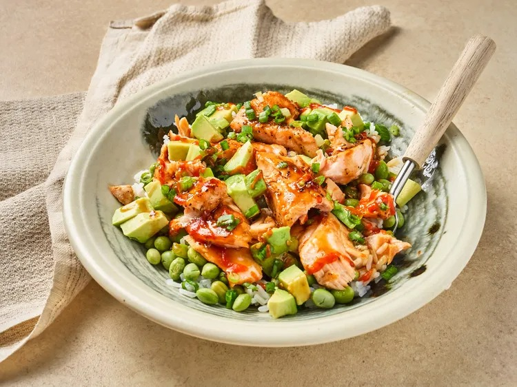

Salmon Teriyaki Bowl

Description
The Salmon Teriyaki Bowlis a complete meal served in a single bowl.
It features a perfectly seared or grilled salmon fillet glazed in a glossy teriyaki sauce,
served over a bed of fluffy rice and accompanied by various fresh or steamed vegetables.
It is a harmonious blend of umami and sweetness.
The rich, fatty texture of the salmon is cut by the saltiness of the soy sauce
and the zing of fresh ginger, while the fresh vegetables provide a clean, crisp finish.
Ingredients
- 8 (4 to 6 ounce) salmon filets
- 1 teaspoon kosher salt
- 1 teaspoon freshly ground black pepper
- 1 cup teriyaki sauce, such as Trader Joe’s® Soyaki® or Kikkoman® Takumi Teriyaki sauce, plus more as needed
- 6 cups cooked jasmine rice
- Sriracha or other hot sauce (optional)
- 4 cups shelled edamame, prepared according to package directions, warm
- 2 avocado, peeled and diced, or more to taste
Steps
- Preheat the oven to 450 degrees F (235 degrees C). Line a rimmed baking sheet with foil and lightly grease the pan.
- Season salmon with salt and pepper and spread 1 tablespoon teriyaki sauce over each fillet. Set salmon on the prepared baking sheet.
- Bake in the preheated oven until salmon flakes easily with a fork, 10 to 12 minutes, or to your preferred doneness.
- Meanwhile prepare rice and edamame according to package directions; keep warm.
- Divide rice among bowls and top with edamame. Flake 1 piece of salmon on top and add avocado.
- Drizzle 1 to 2 tablespoons of remaining teriyaki sauce over each bowl and drizzle with hot sauce.
Home